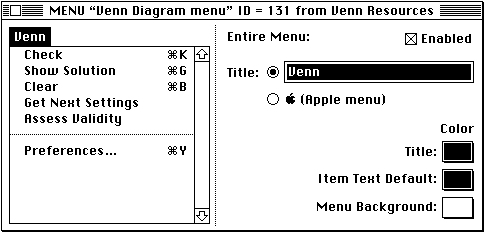
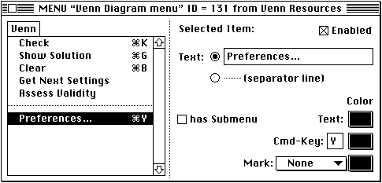
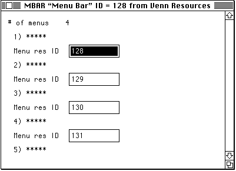

Creating Menus
The easiest way to define menu titles and commands is to use a resource editor like ResEdit to create resources describing your application's menu bar and the individual menus. It's also possible to define your menu bar and menu items internally in your application, but you can make your application significantly easier to localize by isolating that information in resources.
- Note
- As you learned in the chapter "Resources," you can also create resources using the Rez resource-description language and a resource compiler. This chapter shows how to use ResEdit to create menu-related resources.

Creating a Menu Resource
You can define the menu title and characteristics of each individual menu item in a menu resource (a resource of type'MENU'). Figure 8-2 shows the appearance of ResEdit's'MENU'resource editor.Figure 8-2 Defining a
'MENU'resource
As you can see, the menu title is currently selected. ResEdit allows you to change the menu title text or to designate this menu as the Apple menu. This window also lets you set the menu as initially enabled or disabled. In most cases, you'll want to have your menus initially enabled. The Venn Diagrammer application, however, disables the Edit menu because it does not support any text editing.
To edit the text of a menu command, you can click it. ResEdit highlights the selected command and changes the controls in the right side of the window, as shown in
Figure 8-3.Figure 8-3 Editing a menu command

You can use the controls in the right side of the window to change the menu item text, the keyboard equivalent, the menu's mark, and several other items. You can also designate the menu item as initially enabled or disabled. Once again, you'll probably want most items to be initially enabled. You can disable and reenable menu items dynamically during your application's execution; see "Handling Menu Choices" beginning on page 156 for details.
Creating a Menu Bar Resource
You can define the order and resource IDs of the menus in your application in a menu bar resource (a resource of type'MBAR'). You should define your'MBAR'resource in such a way that the Apple menu is the first menu in the menu bar. You should define the next two menus as the File and Edit menus, followed by any other menus that your application uses. You do not need to define the Keyboard, Help, or Application menus in your'MBAR'resource; the Menu Manager automatically adds them to your application's menu bar if your application calls theGetNewMBarfunction and your menu bar includes an Apple menu or if your application inserts the Apple menu into the current menu list using theInsertMenuprocedure.You can use ResEdit to create an
'MBAR'resource. Figure 8-4 shows the'MBAR'resource window for the Venn Diagrammer application.Figure 8-4 An
'MBAR'resource in ResEdit
An
'MBAR'resource is simply a list of the menu IDs, in the order you want the corresponding menu titles to appear from left to right in the menu bar.Setting Up the Menu Bar and Menus
One of the very first things you need to do when your application starts running is set up your menu bar and menus. You can do this by calling the Menu Manager functionGetNewMBar, which reads a specified'MBAR'resource from your application's resource fork and inserts each menu described there into the menu bar. You can define a constant that indicates which'MBAR'resource to open.CONST rMenuBar = 128; {menu bar resource ID}Listing 8-1 shows a standard way to callGetNewMBar.Listing 8-1 Setting up the menu bar and menus
PROCEDURE DoSetupMenus; VAR menuBar: Handle; BEGIN menuBar := GetNewMBar(rMenuBar); IF menuBar = NIL THEN DoBadError(eCantFindMenus); SetMenuBar(menuBar); DisposeHandle(menuBar); AppendResMenu(GetMenuHandle(mApple), 'DRVR'); DrawMenuBar; END;The routineDoSetupMenuscreates the application's menu bar by reading in the definition from the'MBAR'resource with resource IDrMenuBar. TheGetNewMBarfunction returns a handle to the menu bar information stored in that resource and in the'MENU'resources whose IDs are contained in the'MBAR'resource. Notice thatDoSetupMenusmakes sure that the value of the returned handle isn'tNIL; if it is, you shouldn't continue.If
- Note
- Checking that
GetNewMBarreturns handle with a non-NILvalue is probably overkill. It's extremely unlikely that the Menu Manager will have a problem reading your menu-related resources or finding enough free memory to hold the menu list to whichmenuBaris a handle. Nonetheless, it's best to make sure, because passingAppendResMenua handle whose value isNILis likely to cause your application to crash. As a result,DoSetupMenuscalls the application-defined routineDoBadError(defined in Listing 9-5 on page 178) to alert the user of the problem and terminate the application. If the application can't even put up its menu bar, there's no point in continuing to run. (See Figure 7-2 on page 134 for the alert box displayed if the menu resources can't be found.)GetNewMBarreturns a handle with a non-NILvalue, thenDoSetupMenuscalls the procedureSetMenuBarto install the individual menus into the menu bar. At that point, you no longer need the handle and you can dispose of it (by calling the Memory Manager routineDisposeHandle). NextDoSetupMenuscalls theAppendResMenuprocedure to add the items in the Apple Menu Items folder to the Apple menu. Finally, theDoSetupMenusprocedure displays the menu bar by calling theDrawMenuBarprocedure.